超能力圖鑑
四種超能力介紹
讓人社院裝備你一雙「透視眼」
這是一種深耕於歷史、哲學與社會學的「知性辨析力」。文化永續不是「恢復舊觀」，而是要在習以為常的情境中辨析權力的運作。
歷史所以紮實的史學訓練，提供長時段的視野，揭示文明與科技如何在變遷中動態生成，而非被僵化「定型」；哲學所則揉合英美分析與現象學傳統，引導學生在人工智慧倫理、身心哲學等當代議題中辨析價值結構，讓哲學反思成為具公共責任的行動。而社會所則進一步培養提問與回答的能力，拆解社會生活的運作邏輯，找尋人類與萬物共生的永續基礎。
透過這雙透視眼，我們能與既定價值保持距離，發掘那些被忽略的文化價值。

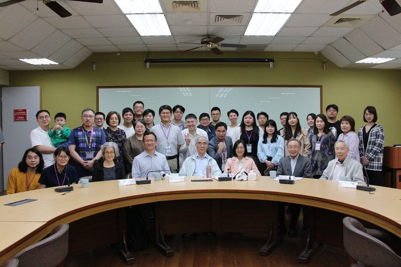

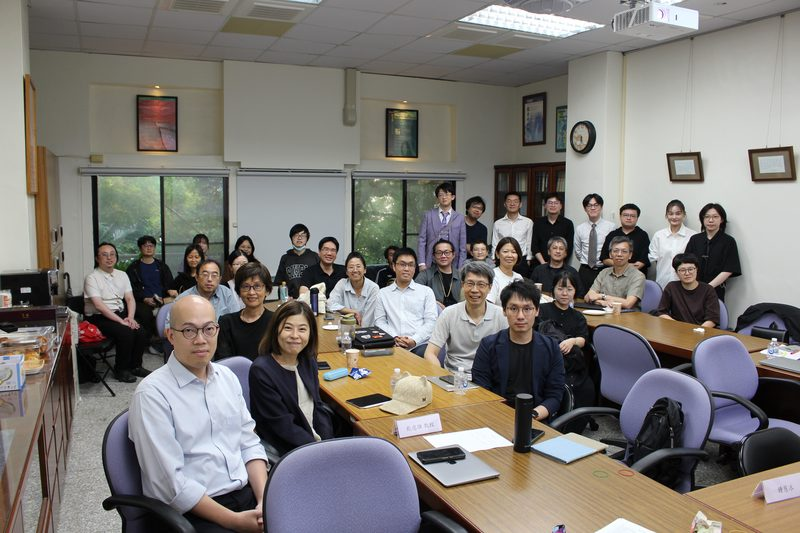

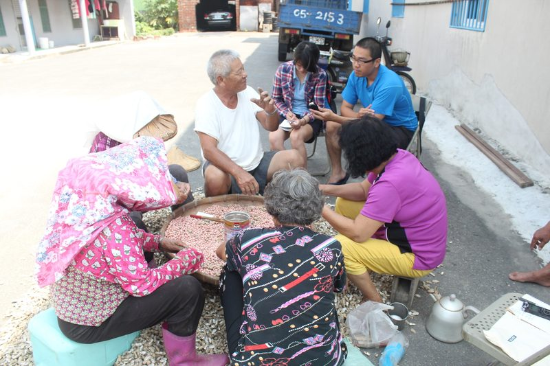
讓人社院修煉你的「共鳴耳」
這是一種實現與「非我」深度對話的共感力。永續的關鍵在於願意在「如其所如」的理解下，讓已被陌生化的文化對我們說話，照見自我的侷限。
人類學所透過長期的田野參與，細緻理解在地脈絡中的社會關係，使研究成為社群主體性的對話；外語系則藉由跨文化解讀與第二外語訓練，培養回應文化永續精神的詮釋能力。此外，語言所致力於漢語方言與台灣南島語的母語復振，建構語料庫並促進公眾交流，擴大文化多樣性的聲量；亞際學程則從亞際視角關注亞洲社會間的文化流動與權力結構。
這對共鳴耳，讓我們學會放下知識傲慢，在差異中建立真誠的倫理連結。

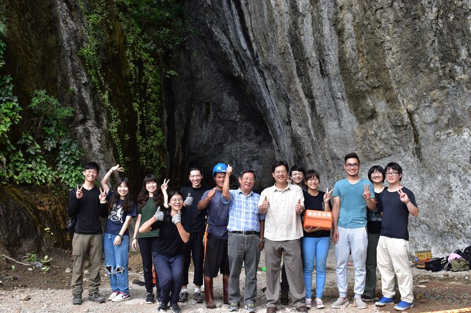

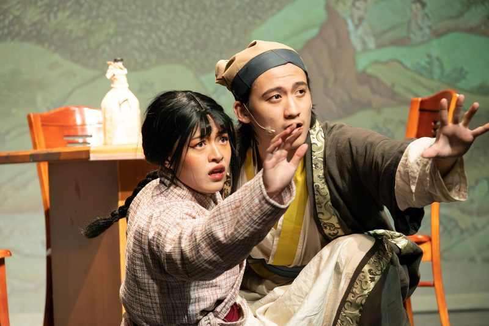

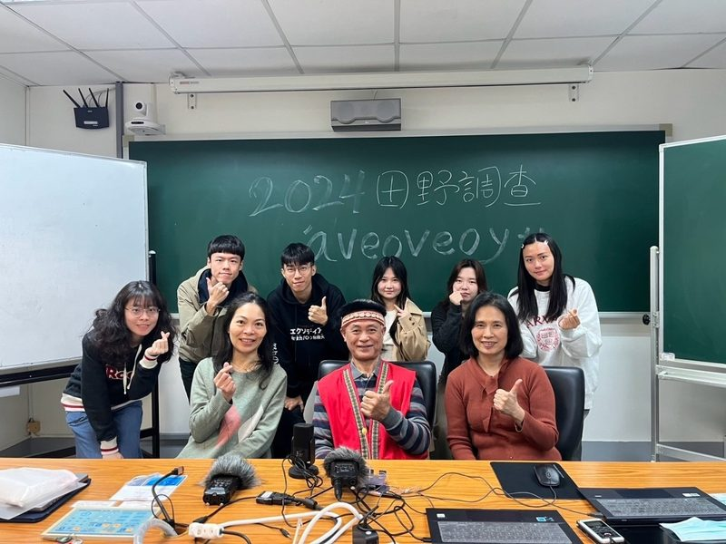

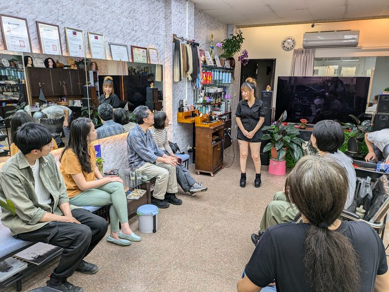
讓人社院打磨你的「敘事筆」
這是一種賦予文化新的形式與內容的創造力。文學與語言是情感經驗交會的場所，也是我們與文化產生意義關聯的媒介。
中文系承繼古典與近現代傳統，透過跨時空的詮釋，反映文化的永續價值；台文所則全方位搜輯文獻，從原住民口傳到當代影視影像，將台灣精神發展轉化為想望未來的資源。華文所更強調跨域與在地的結合，透過田野錄影數位化與俗曲抄本的保存轉譯，讓文學介入社會場域。
這支敘事筆，不只是復刻歷史，而是透過創造力將生硬的理論與遙遠的記憶，轉化為大眾能共感的當代敘事，讓文化在文本中活出真實的永續生命。

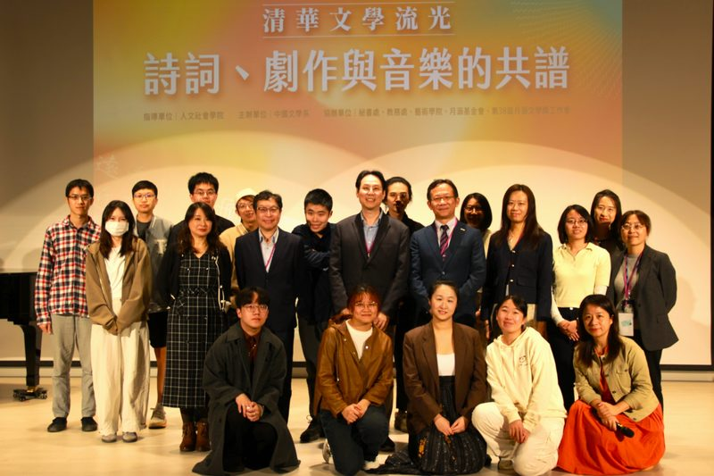

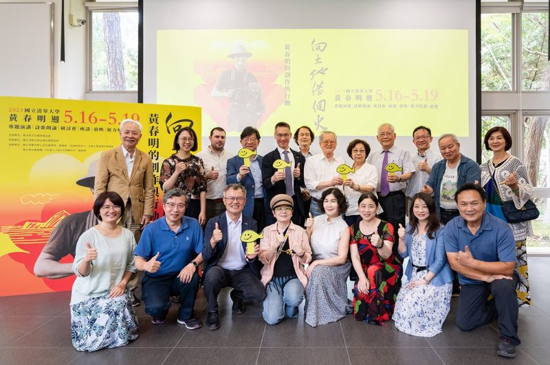

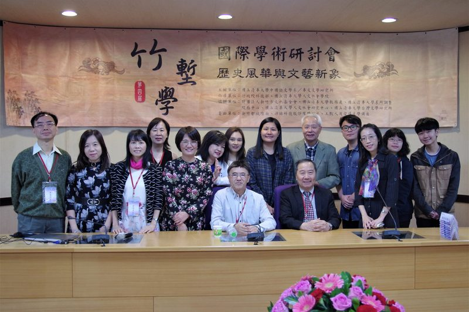
讓人社院喚醒你的「改變手」
這是一種匯聚一切知性與感性，達成「主動開放」的實踐力。
人社院學士班以跨領域訓練為核心，鼓勵學生將歷史學、文學、哲學、社會學與人類學知識運用於真實情境，回應當代議題。臺研教與華語教研學程則在教育與國際交流的前線，透過教師進修、外國青少年華語課程及「學海築夢」計畫，培育具備文化行動力的專業人才，消除不平等並推動優質教育。這些實踐不僅止於保存文化，更是讓文化成為一種可持續發展的生活方式。
這雙改變手，證明了當我們願意有意識地創造對話契機，知識便能轉化為推動社會進步的真實力量。

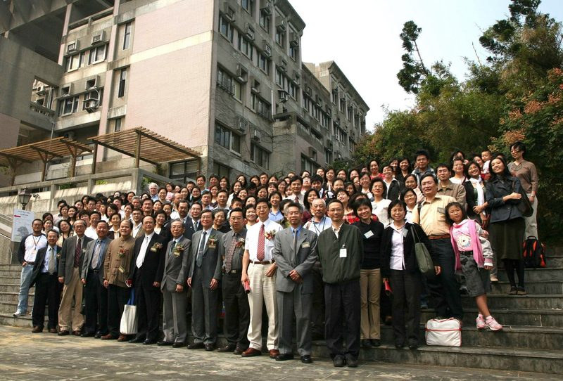

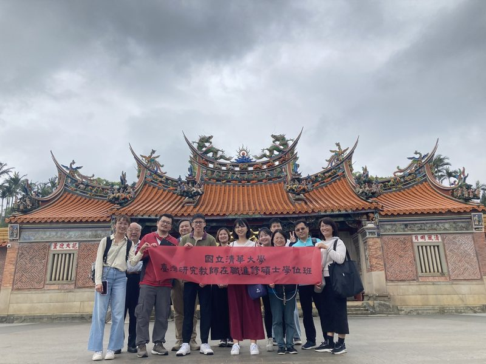

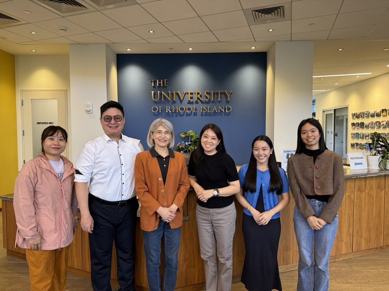